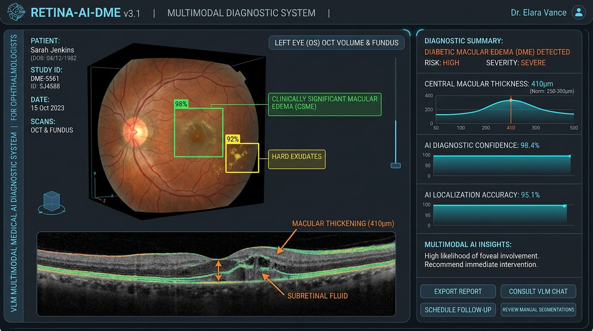
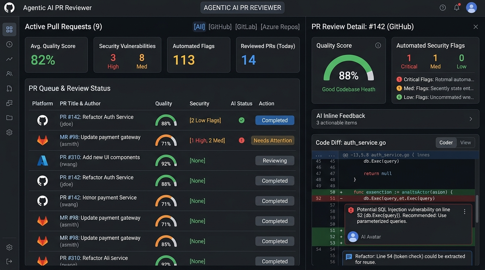
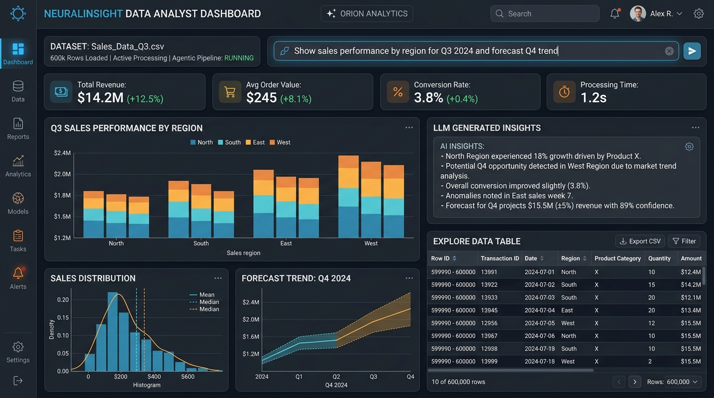

About Me
I am an AI/ML Engineer with 2+ years of hands-on experience designing and deploying production-grade intelligent systems on Azure AI and Oracle Cloud Infrastructure (OCI).
My work focuses on building agentic AI workflows, Retrieval-Augmented Generation (RAG) systems, multi-modal LLM integration, and real-time computer vision pipelines shipped at enterprise scale.
From engineering an org-wide automated AI PR Reviewer (E-ZPR) adopted across engineering teams at 10Pearls, to building medical diagnostic VLM systems for Diabetic Macular Edema, I bridge cutting-edge research with production-grade reliability using LangChain, LangGraph, CrewAI, PyTorch, and MLOps best practices.
Technical Skills
Agentic & GenAI Workflows
Computer Vision & Multimodal
ML / DL & Programming
Cloud, DevOps & MLOps
Backend & Databases
Work Experience
Associate Software Consultant - AI/ML
10Pearls • Karachi, Pakistan
- Agentic Enterprise Data Analyst: Architected an intelligent Data Analyst system processing 600,000+ CSV rows, replacing hours of manual enterprise reporting with automated insights, chart visualizations, and statistical summaries.
- E-ZPR AI Pull Request Reviewer: Built and deployed E-ZPR, an AI-powered code review agent integrated across GitHub, GitLab, Bitbucket, and Azure Repos; adopted org-wide to cut turnaround time by 50% and raise code quality standards across engineering teams.
- Oracle Fusion Cloud AI Agents: Delivered 65+ Agents in Oracle Fusion Cloud Redwood pages for 24A-25D client platforms using AI Agent Studio.
- Agentic RAG Benchmarking: Architected Agentic RAG systems with measurable retrieval accuracy improvements, establishing baseline benchmarks adopted across multiple project teams.
- TDD & Schema-Driven Agent POCs: Delivered production-ready POCs for agentic code generation using TDD and Schema-Driven API patterns with LangChain, LangGraph, and CrewAI, significantly reducing prototype-to-delivery cycles.
- AI Executive Leadership Enablement: Empowered senior leadership with practical AI workflows through hands-on training on Claude Code, Codex, GitHub Copilot, and AnythingLLM.
AI Intern - Computer Vision
Smart City Lab, NCAI-NEDUET • Karachi, Pakistan
- Autonomous Car Vision System (ADMS): Developed and deployed Advanced Driver Monitoring Systems (ADMS) and vehicle tracking models using YOLOv5 and Detectron2, integrated directly into an autonomous vehicle test platform.
- Automated Real-Time Inference: Built cattle weight detection and face recognition systems with PyTorch and TensorFlow, replacing manual assessments with automated real-time inference pipelines.
- Production Django ML Integration: Integrated computer vision models into production Django web applications connected to MySQL/MSSQL databases, delivering AI insights to non-technical operational staff.
Featured Projects

VQA Pipeline for Diabetic Macular Edema
Led the end-to-end development of a Vision-Language Model (VLM) Visual Question Answering + Multimodal RAG diagnostic system. Designed to provide AI-powered second opinions for ophthalmologists, bridging specialist access gaps for millions of diabetes patients.

E-ZPR: AI Pull Request Reviewer
Designed and shipped a production-grade agentic PR review tool adopted org-wide at 10Pearls across GitHub, GitLab, Bitbucket, and Azure DevOps platforms. Features automated code quality checks, security flaw detection, and inline conversational reviews.

Agentic Enterprise Data Analyst System
Architected an autonomous multi-agent reporting pipeline capable of ingesting and querying over 600,000 CSV records. Automatically generates executive summaries, statistical plots, anomaly reports, and dynamic data visualizations.
Education & Certifications
B.E. in Computer Systems Engineering
NED University of Engineering and Technology • Karachi, Pakistan
CGPA: 3.5 / 4.0
Fully Funded Foreign Scholarship • Merit BasedG.C.E Advanced Level
Al – Mubarak National School • Malwana, Sri Lanka
Physics: A • Chemistry: A • Combined Math: B
District Rank: 159 (Gampaha District)Industry Certifications & Credentials
AI Evaluation Specialist
micro1 • 2026
Oracle Fusion AI Agent Studio Certified Associate
Oracle Cloud • 2026
Oracle Cloud Infrastructure 2025 AI Foundations Associate
Oracle • 2026
Azure AI Fundamentals
Microsoft via 10Pearls University • 2025
Advanced Computer Vision in TensorFlow
DeepLearning.AI • 2024
IBM Python & Data Engineering Certification
IBM • 2024
Interactive AI Terminal
Welcome to Muhammed Hasan Misba's AI Terminal!
Type 'help' to see available commands or click quick prompts below.
Get In Touch
Let's Build Something Intelligent Together
I am currently open to exciting opportunities in AI/ML Engineering, Agentic Workflows, Computer Vision, and RAG Architecture. Whether you have a project idea, enterprise AI challenge, or role available, feel free to reach out!